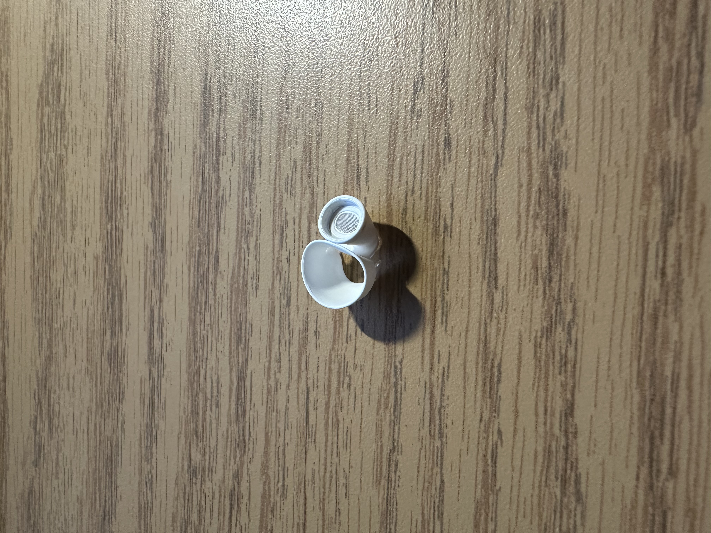

The item is the ear tip of my air pod pros. It is a small, circular, and rubbery material that has a plastic screen embedded within the ear tip to protect the inner part of the air pod.
I received my air pod pros from my uncle the summer before I started college (3 years ago). I have been listening to music with it every single day and it has been by my side almost everywhere I go these past 3 years.
I am getting rid of it because the most fragile rubber part of the air pod tip tore and no longer has its noise cancelling capabilities because of the tear. This is what is most important to me because my favorite part of the air pod maxes is their noise cancelling abilities. Without it, the imbalance in the two air pods makes me unable to listen to music properly.

The ear tip of my air pod pro maxes broke today of all days. I decided to go to the on-campus career fair today to try to get an on-campus job.
The event started at 9:30am but I was late. I had gotten there at 10:15. When I got there, the line has wrapped around the entirety of the student center. It was like I was waiting for a six flags ride on one of its busiest days.
Luckily, I met up with a friend of a friend to pass time by sulking about how long the line was and how doomed the job market is. All of this talk of job hunting and the hopelessness of it all made me stressed out.
Coincidentally, I had taken out my air pods to talk to my friend. While talking, the stress made me anxious which caused me to fidget with the air pod tip by flipping it in and out over and over again. Before I knew it, the tip had broken and I was devastated.
I learned from this article that air pod pro 3 ear tips don't fit with the air pod pro 2 ear tips. Initially, one might think that this is a money grabbing ploy. But there's actually a good reason for it. The new foam-infused ear tip causes the air pod to need a little more force to pull out. As such, they made the connectors (from air pod to ear tip) deeper, and therefore are incompatible with the previous generation. (Macworld)
I learned from this article that air pod pro 3 ear tips have an XXS size because the foam infusion now creates the new need for a smaller size because those that needed an XS size ear tip before might need an XXS size due to the firmer texture of the new gen air pod pro 3 ear tips. (CultOfMac)
I learned from this article that air pod pro 2 ear tips already currently have a foam version of the ear tips. Granted, there is a 4.1/5 review on Amazon, showing that it may not be as well engineered as Apple's own design. (MacWorld)